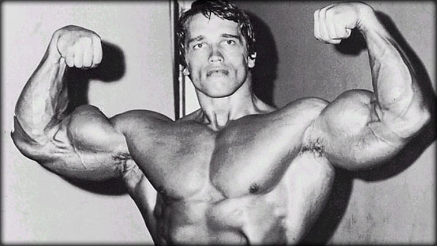

Toward the end of the 19th century, weight-training took on a new meaning for many, as the ancient tradition of stone-lifting, practiced initially by the Greeks and Egyptians, made way for a completely new system of training, with a new end-goal. Weightlifting for entertainment purposes emerged in Europe, signalling the beginning of a physical culture never before seen.
The intention was not to develop one's physique into a glorious spectacle per se, but to thrill crowds with amazing feats of strength the professional strongman was the outcome of this intensified interest in weight-training. The modern sport of weightlifting was somewhat of a natural evolution from the comparatively primitive practice of stone-lifting in dark, dank dungeons.
The first bodybuilding show, staged in 1891 and billed as "The Great Show," was developed and promoted by none other than the great Eugene Sandow.After popularizing bodybuilding though frequent strength exhibitions and posing displays across Europe and America, Sandow, 34, decided, after three years of planning, that the time was right. He would provide all Sandow students in the U.K with the opportunity to display their physiques in a competition setting replete with a full judging panel and paying audience.
| Name | Bench Press Max |
|---|---|
| Phil Heath | 550 Pounds |
| Jay Cutler | 505 Pounds |
For more great information on bodybuilding vist iffb
I went to an existing website that is about bodybuilding called (I also want to cite bodybuilding.com for some of the above information)Bodybuilding.com
This website looks great beaceuse it is oranized very well. What I mean by this is that it has great headers and footers and the paragraphs are also organized well. There are also lots of great picures and even videos to display and instruct on how to complete certain weight lifting excersizes. When looking at the source code I recognized image elements, table elements, and header/footer elements.